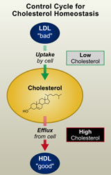

News Archives : 2004 : Straight Talk on a Slippery Subject
by Richard Saltus
July 22, 2004
To Axel Nohturfft of Harvard’s Department of Molecular and Cellular Biology, cholesterol is a scientific puzzle. He also knows it can be a serious health factor, even a matter of life and death. Nohturfft studies the molecule’s biochemical complexities and, specifically, how a rare but lethal genetic disease strikes down children because their cells can’t metabolize it normally.
Outside the laboratory, Axel Nohturfft worries that cholesterol and its relationship to heart disease are widely misunderstood by the public. Patients are aware of the dangers of high cholesterol but are handed blood test results with numbers they struggle to interpret, especially since medical advice seems to change frequently.
And the media, he fears, are little help. "You see articles about cholesterol coming out about every month, and I don’t feel they explain it very clearly," says Nohturfft, an assistant professor of molecular and cellular biology.
So he is making an effort to share his expertise with the public. On July 7, he gave a public lecture on the Harvard campus, offering straight talk from a scientist—not a physician, he emphasized—who, like anyone else, keeps an eye on his own cholesterol numbers. The talk, titled "The Good, the Bad, and the Ugly: Cholesterol in Health and Disease," was promoted by Harvard’s Office of Community Relations and the Cambridge Mayor’s Office, in recognition of its public health significance.
"Good" and "bad" cholesterol are a familiar, if mysterious, pair to the layman, and Nohturfft has added a third "ugly" sort in his focus on how cholesterol relates to heart disease. Cholesterol itself is a waxy organic compound that is found in the blood and tissues of all animals, including humans. It has its functions in a healthy body; in fact, life could not exist without it. Cholesterol is a critical component of the membranes that surround cells and the organelles inside them, like the nucleus.
Cholesterol molecules are embedded in these membranes’ double layer of lipids, or fats, and help keep them stable, pliable, and resistant to physical disturbances. "Cholesterol is the antifreeze of cellular membranes," explained Nohturfft. It has other key jobs as well, serving as a precursor for bile, certain hormones, and vitamin D.
Something as important as cholesterol needs at least one reliable source; the body has two. Cholesterol from fatty foods in the diet is taken up and distributed through the bloodstream. In addition, the compound can also be manufactured by the body’s own cells.
|  The cholesterol balancing act. A cellular needfor cholesterol triggers aswitch thatactivates cholesterol synthesis and uptake fromLDL. Whencellular cholesterol levels rise too high, synthesis and uptake are switched\off; in additioncholesterol is "pumped" out of the cell and transferred toHDL. Excessive uptake of LDL or reduced transfer |
|
In their quest for balance, cells are constantly taking in cholesterol from the bloodstream and pumping it back out. The blood acts like a river, bearing cholesterol to the organs and tissues. Insoluble in water, cholesterol is carried in the form of lipoproteins—particles of lipids (fats) with protein molecules on their surface. It is here, in the bloodstream, that we encounter the "good" and "bad" molecules of concern to anyone who has received a cholesterol test report.
LDL, or low-density lipoprotein, is the major transport form for cholesterol in blood. It is also known as the "bad cholesterol," because of the problems that can follow from an excess of LDL. LDL attaches to specific receptors on a cell’s surface that serve as entryways for cholesterol into the cell. Once inside, the LDL particles hand over the cholesterol to the cell’s machinery.
But the LDL import system can be overactive, and its cholesterol cargo can accumulate, overloading the cell. Evolution has again provided balancing mechanisms, however, and this is where the "good cholesterol" (HDL, or high-density lipoprotein) comes into play. HDL is essential for the ability of cells to pump cholesterol out into the bloodstream, thus restoring the cell’s proper balance. HDL also barges the cholesterol to the liver to be degraded and dumped.
Because the two lipoproteins behave differently, medical tests report not simply a person’s total cholesterol level but the breakdown between LDL and HDL within the total. Since HDL can remove the excess cholesterol transported by LDL, even if two people have the same overall cholesterol level, the person with the higher the proportion of HDL and the lower the level of LDL will have a lower risk of disease.
Nohturfft gave several lines of evidence linking excess LDL cholesterol with atherosclerosis, the accumulation of fatty deposits or plaques inside blood vessels. The plaques consist of cholesterol, calcium, and a fibrous "cap." When a plaque suddenly ruptures, the fatty interior comes in contact with the blood, forming a clot that may precipitate a heart attack.
It is now known that inflammation inside the vessel precedes the formation of the plaque. Cholesterol enters inflammatory cells called macrophages. Macrophages don’t have receptors that directly admit the LDL form of cholesterol, but they have "scavenger receptors" that can take in a slightly different form of LDL called OxLDL, i.e., LDL particles that have been oxidized. It is this form of cholesterol Nohturfft has dubbed "the ugly." Because of its contribution to inflammation and plaque, OxLDL is a health risk. Smoking, Nohturfft noted, is one thing that can contribute to the formation of OxLDL.
Having provided scientific background for the cholesterol problem, Nohturfft turned the discussion to cholesterol-lowering measures. He offered no magic bullets but suggested practical steps worth trying, steps that were effective in his own case, he said. They include: losing weight, quitting smoking, eating more unsaturated fats, and avoiding saturated fats and the newly recognized "trans fats" used in many prepared and deep-fried foods. In addition, exercise raises HDL and lowers LDL.
Sometimes, though, these initiatives are not enough. "If a patient’s blood cholesterol levels exceed recommended levels and these measures don’t work within a year, then the doctor is likely to prescribe statin medications," said Nohturfft. Statins are very effective and are generally well tolerated, the scientist said, although side effects can be severe when they do occur. Brand names include Lipitor, Zocor, and Mevacor.
These medications "inhibit the key enzyme required for cholesterol synthesis, so the only source the cells have left is uptake from the blood," he explained. "Since most LDL receptors are on the liver, LDL is taken up rapidly by the liver," reducing LDL cholesterol in the blood.
Statins have shot to the top of the most-prescribed medications, with an estimated 13 million Americans taking them now. The advent of these cholesterol-lowering drugs has dramatically altered the treatment of high cholesterol and heart disease risk, but at a financial cost. One manufacturer made $7 billion in a single year from its drug, and statins have become the largest prescription drug expense in US health care, Nohturfft noted.
Desirable cholesterol levels are 100–199 milligrams (mg) per deciliter (dl) of blood; anything over 240 is a signal to take action, Nohturfft said. For the "good" HDL, the higher the better. For the "bad" LDL, levels below 130 mg/dl are desirable. New guidelines recommend that high-risk patients be given statins in doses high enough to attain an LDL reading below 100.
In answering audience questions, Nohturfft noted that having very high cholesterol doesn’t preordain a person to a heart attack, nor does owning a low cholesterol level mean you won’t have one: the numbers measure risk factors, not certainties.
Nohturfft’s mission to clarify issues surrounding cholesterol will continue on August 19, when he gives a seminar to a group of health educators at the Community Health Education Center in Boston. The CHEC provides outreach and health education to diverse communities in the Boston area.